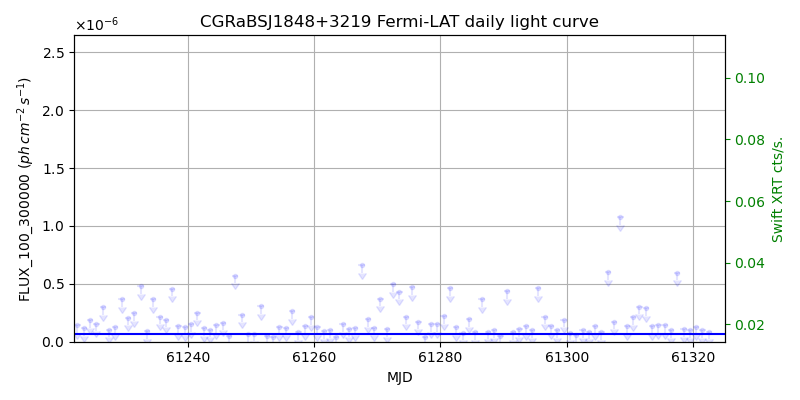
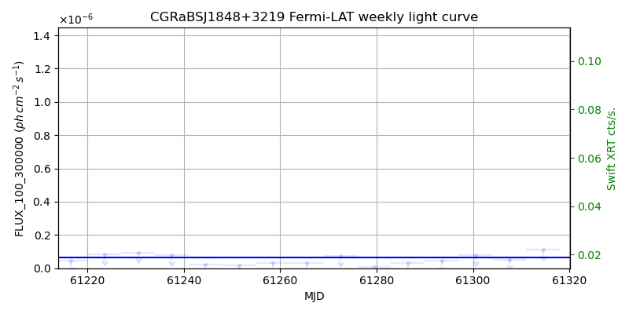
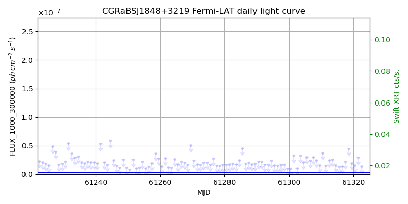
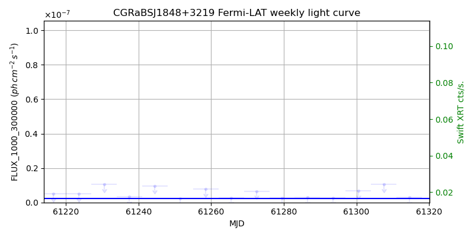

LAT Lightcurve site: https://fermi.gsfc.nasa.gov/ssc/data/access/lat/msl_lc/source/CGRaBS_J1848p3219
Swift site: https://www.swift.psu.edu/monitoring/source.php?source=CGRaBSJ1848+3219
NED: Query
Time of last update of this page: UT: 2026-10-10 15:25 (MJD: 61323.643)
| Property | Value |
|---|---|
| R.A. | 18:48:22.08 |
| Dec. | 32:19:01.2 |
| z | 0.798 |
| 3FGL SpectrumType | PowerLaw |
| 3FGL PL Index | 2.41 |
| 3FGL Flux_100_300000 | 6.29e-08 1 / (s cm2) |
| 3FGL Flux_1000_300000 | 2.44e-09 1 / (s cm2) |
| 3FGL Flux >200 GeV | 1.38e-12 1 / (s cm2) |
| 3FGL Extrap. Crab >200 GeV | 0.01 |
| 3FGL Flux After EBL Absorption >200GeV | 5.41e-14 1 / (s cm2) |
| 3FGL EBL Crab Fraction >200GeV | 0.00 |

| MJD | dMJD | Flux | dFlux | Frac3FGL | FracCrab>200GeV | EBLFracCrab>200GeV |
|---|---|---|---|---|---|---|
| 61318.50 | 0.50 | 1.07e-07 | 0.00e+00 | 0.00 | 0.00 | 0.00 |
| 61319.50 | 0.50 | 1.01e-07 | 0.00e+00 | 0.00 | 0.00 | 0.00 |
| 61320.50 | 0.50 | 1.31e-07 | 0.00e+00 | 0.00 | 0.00 | 0.00 |
| 61321.50 | 0.50 | 1.01e-07 | 0.00e+00 | 0.00 | 0.00 | 0.00 |
| 61322.50 | 0.50 | 8.81e-08 | 0.00e+00 | 0.00 | 0.00 | 0.00 |

| MJD | dMJD | Flux | dFlux | Frac3FGL | FracCrab>200GeV | EBLFracCrab>200GeV |
|---|---|---|---|---|---|---|
| 61286.50 | 3.50 | 2.97e-08 | 0.00e+00 | 0.00 | 0.00 | 0.00 |
| 61293.50 | 3.50 | 4.62e-08 | 0.00e+00 | 0.00 | 0.00 | 0.00 |
| 61300.50 | 3.50 | 7.87e-08 | 0.00e+00 | 0.00 | 0.00 | 0.00 |
| 61307.50 | 3.50 | 5.21e-08 | 0.00e+00 | 0.00 | 0.00 | 0.00 |
| 61314.50 | 3.50 | 1.13e-07 | 0.00e+00 | 0.00 | 0.00 | 0.00 |

| MJD | dMJD | Flux | dFlux | Frac3FGL | FracCrab>200GeV | EBLFracCrab>200GeV |
|---|---|---|---|---|---|---|
| 61318.50 | 0.50 | 4.46e-08 | 0.00e+00 | 0.00 | 0.00 | 0.00 |
| 61319.50 | 0.50 | 1.97e-08 | 0.00e+00 | 0.00 | 0.00 | 0.00 |
| 61320.50 | 0.50 | 1.57e-08 | 0.00e+00 | 0.00 | 0.00 | 0.00 |
| 61321.50 | 0.50 | 2.92e-08 | 0.00e+00 | 0.00 | 0.00 | 0.00 |
| 61322.50 | 0.50 | 1.40e-08 | 0.00e+00 | 0.00 | 0.00 | 0.00 |

| MJD | dMJD | Flux | dFlux | Frac3FGL | FracCrab>200GeV | EBLFracCrab>200GeV |
|---|---|---|---|---|---|---|
| 61286.50 | 3.50 | 2.98e-09 | 0.00e+00 | 0.00 | 0.00 | 0.00 |
| 61293.50 | 3.50 | 2.75e-09 | 0.00e+00 | 0.00 | 0.00 | 0.00 |
| 61300.50 | 3.50 | 6.76e-09 | 0.00e+00 | 0.00 | 0.00 | 0.00 |
| 61307.50 | 3.50 | 1.06e-08 | 0.00e+00 | 0.00 | 0.00 | 0.00 |
| 61314.50 | 3.50 | 3.03e-09 | 0.00e+00 | 0.00 | 0.00 | 0.00 |
--------------------------------------------------------- Using user-supplied coords: 18:48:22.08 32:19:01.2 2000 --------------------------------------------------------- FLWO UT night of: 2026-10-11 Local Sid. @ Midnight: 00:55 Sunset (-15.0) (local, UT): 19:04 02:04 Sunrise (-15.0) (local, UT): 05:18 12:18 Moonrise (local, UT): Moonset (local, UT): Moon phase: 0.01 --------------------------------------------------------- AzTime LSID UT Obj_el Obj_az Mn_el Mn_az Sep. --------------------------------------------------------- 19:04 19:58 02:04 75.3 277.2 -16.1 264.2 91.7 19:34 20:29 02:34 68.9 278.5 -22.3 267.8 91.5 20:04 20:59 03:04 62.6 280.1 -28.5 271.5 91.3 20:34 21:29 03:34 56.3 282.0 -34.7 275.4 91.1 21:04 21:59 04:04 50.1 284.0 -40.8 279.7 90.9 21:34 22:29 04:34 43.9 286.2 -46.8 284.6 90.7 22:04 22:59 05:04 37.8 288.5 -52.7 290.5 90.5 22:34 23:29 05:34 31.8 290.9 -58.4 297.7 90.3 23:04 23:59 06:04 25.9 293.6 -63.6 307.3 90.1 23:34 00:29 06:34 20.1 296.4 -68.1 320.3 89.8 00:04 00:59 07:04 14.4 299.4 -71.3 338.2 89.6 00:34 01:29 07:34 9.0 302.7 -72.6 0.4 89.4 01:04 01:59 08:04 3.8 306.2 -71.5 22.7 89.2 01:34 02:30 08:34 -0.7 310.1 -68.3 40.8 88.9 02:04 03:00 09:04 -6.0 314.3 -63.9 54.1 88.7 02:34 03:30 09:34 -10.6 319.0 -58.7 63.8 88.5 03:04 04:00 10:04 -14.5 324.1 -53.1 71.2 88.3 03:34 04:30 10:34 -18.0 329.6 -47.3 77.2 88.1 04:04 05:00 11:04 -21.0 335.5 -41.4 82.2 87.9 04:34 05:30 11:34 -23.3 341.9 -35.3 86.6 87.8 05:04 06:00 12:04 -24.9 348.7 -29.2 90.6 87.6 05:18 06:14 12:18 -25.4 351.8 -26.5 92.4 87.5 --------------------------------------------------------- Dark hours >55 deg.: 1.61 srcstart (UT): 2026-10-11 02:04 srcend (UT): 2026-10-11 03:40